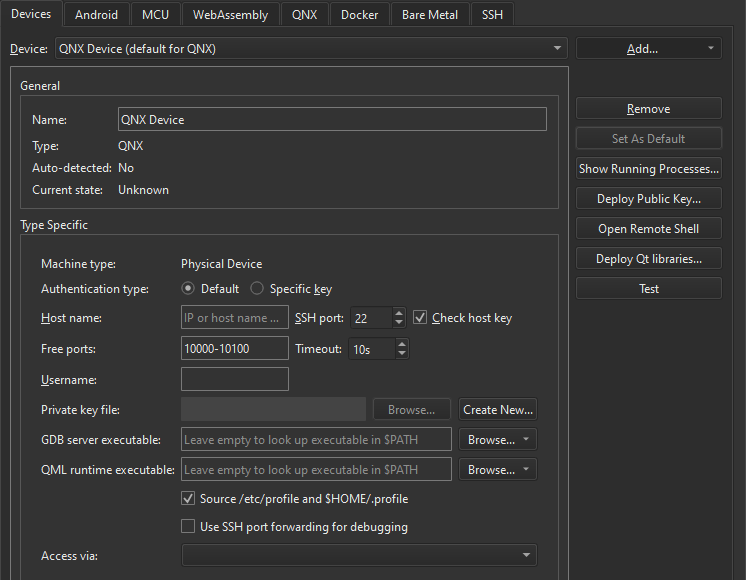

Run on QNX devices
To build an application and run it on a device:
- Connect the device to the computer or to a network.
- Go to Preferences > Devices > Devices, and add a QNX device.

- Make sure that your kit has your QNX device set.
- Select
 (Run).
(Run).
Qt Creator uses the compiler specified in the QNX toolchain to build the application.
Note: Debugging is currently only fully supported on Linux and macOS. It is not possible to insert breakpoints during runtime on Windows.
Troubleshoot errors
To support running, debugging, and stopping applications from Qt Creator, the QNX Neutrino RTOS has additional command-line tools and services, as described in Qt for QNX.
Debug output cannot be shown
For the command-line output to show up in Application Output, Qt Creator has to create an SSH connection to the device. This is only possible if QNX Momentics is not running, and the SSH key configured for the device is a 4096-bit key.
If these conditions are not met, you will get an error message saying debug output cannot be shown.
Cannot run, debug, or stop applications
The board support package (BSP) for the QNX device might be missing some of the following applications that Qt Creator needs to run, debug, and stop applications on QNX devices: awk, grep, kill, netstat, print, printf, ps, read, sed, sleep, uname, slog2info, and cat.
See also How To: Develop for QNX, Run on many platforms, Compilers, and Kits.